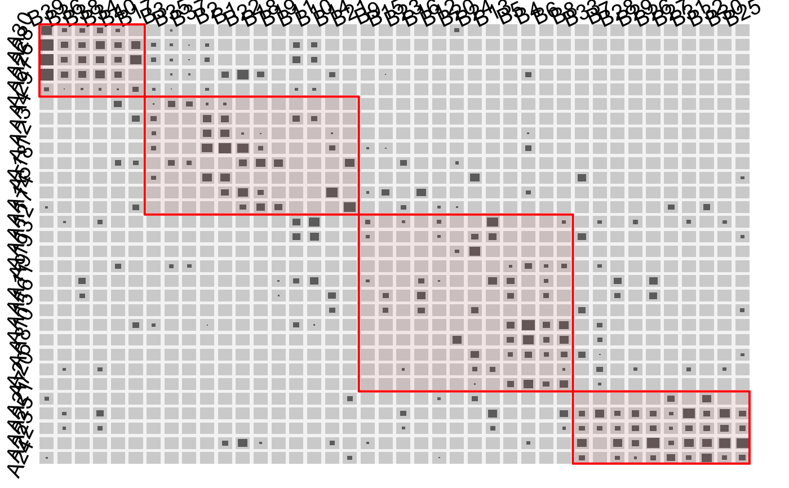
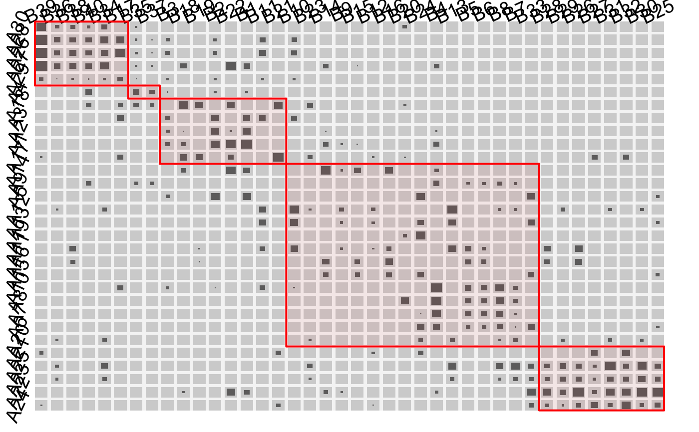
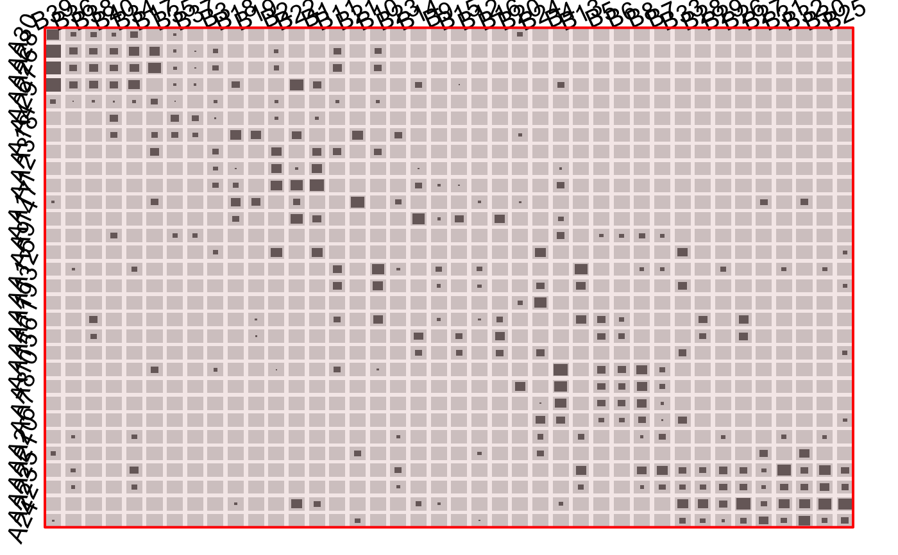

Pseudo-Diagonal Partitioning for two-way tables
cfluctile.RdIdentifies a diagonal of block-clusters in a two-way table using a top-down-partitioning algorithm then plots the table and adds the clusters as rectangles.
cfluctile(x, tau0 = NULL, method = "Kendall", nsplit = NULL,
maxsplit = NULL, trafo = I, gap.prop = 0.2, floor = 0,
rev.y = FALSE, add = FALSE, shape = "r", just = "c",
dir = "b", plot = TRUE, rect.opt = list(), border =
NULL, label = TRUE, lab.opt = list(), tile.col =
hsv(0.1, 0.1, 0.1, alpha = 0.6),
tile.border = NA, bg.col = "lightgrey", …)
Arguments
| x | A 2-way table or matrix. |
||||||||||||||||||||||||||||||||
|---|---|---|---|---|---|---|---|---|---|---|---|---|---|---|---|---|---|---|---|---|---|---|---|---|---|---|---|---|---|---|---|---|---|
| tau0 | The minimum acceptable value of Kendall's tau, Cohen's Kappa or WBCI. Defaults to the criterion of the input matrix |
||||||||||||||||||||||||||||||||
| method | Either |
||||||||||||||||||||||||||||||||
| nsplit | The number of splits to make. |
||||||||||||||||||||||||||||||||
| maxsplit | The maximum number of splits. |
||||||||||||||||||||||||||||||||
| trafo | A transformation of the table entries for the plot, but not for the computation of the splits.
E.g. |
||||||||||||||||||||||||||||||||
| gap.prop | proportion of the gaps between rows/columns. |
||||||||||||||||||||||||||||||||
| floor | floor censored zooming: all cases will be plotted but only those with a frequency of at least |
||||||||||||||||||||||||||||||||
| rev.y | revert the y axis. |
||||||||||||||||||||||||||||||||
| add | Whether to make a new plot or to add to an existing one. |
||||||||||||||||||||||||||||||||
| shape | The shape of the objects. See fluctile. |
||||||||||||||||||||||||||||||||
| just | See fluctile. |
||||||||||||||||||||||||||||||||
| dir | See fluctile. |
||||||||||||||||||||||||||||||||
| plot | Whether or not to create a plot via |
||||||||||||||||||||||||||||||||
| rect.opt | A list with optional parameters for the rectangles. Possible parameters are:
|
||||||||||||||||||||||||||||||||
| border | The white margins around the plot which are also used for the labels.
Must be a vector of length 1, 2 or 4 with values in [0, 1]. Default is |
||||||||||||||||||||||||||||||||
| label | Whether or not to draw labels. |
||||||||||||||||||||||||||||||||
| lab.opt | Label options, see fluctile. |
||||||||||||||||||||||||||||||||
| tile.col | Color(s) for the tiles, see fluctile. |
||||||||||||||||||||||||||||||||
| tile.border | Border color for the tiles. Can also be a matrix. |
||||||||||||||||||||||||||||||||
| bg.col | Color for the background of the cells, see fluctile. |
||||||||||||||||||||||||||||||||
| … | dots |
Details
This function calls fluctile to create a 2-way fluctuation diagram and then adds cluster rectangles to it. The cluster rectangles are computed in the following way:
The algorithm cuts the data matrix once horizontally and once vertically and computes a criterion for the 2x2 table consisting of the sums of the four parts that resulted from the cuts. This is done for all possible horizontal and vertical cuts and the best combination is chosen.
Then the same procedure is applied to the bottom right submatrix and the top left submatrix. The algorithms stops if no cut yields a better criterion value than tau0.
Value
Note
This was part of the Google Summer of Code 2011.
See also
Examples
cfluctile( M3, nsplit = 4 )cfluctile( M3, maxsplit = 12 )cfluctile( M3, tau0 = 0.8 )